채널: 레디포그로스 (Ready For Growth) | 길이: 11:25 | 날짜: 2026-01-14
세그먼트 1 (0:00-0:24)
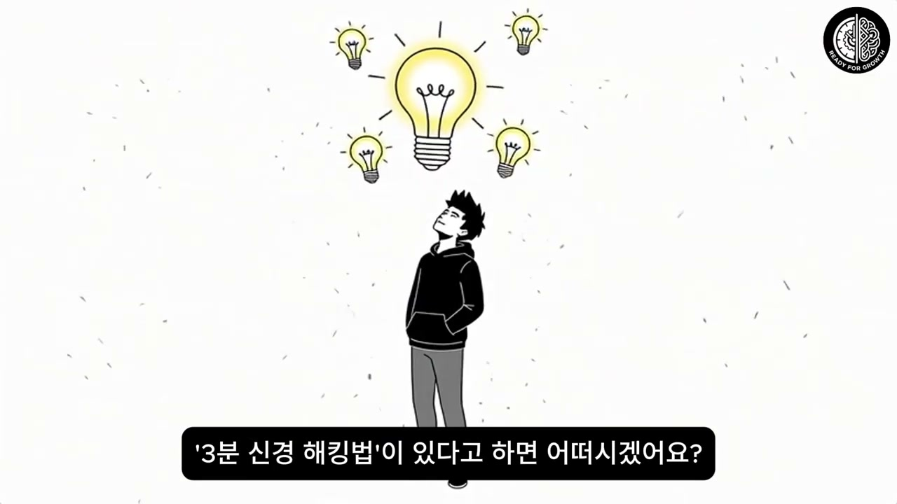
화자는 “의지력에 의존하지 않고 머릿속 거대한 아이디어를 즉각 성과로 바꾸는 3분 해킹법”을 전면에 배치해 강한 훅을 만듭니다. 기존 시간관리/동기부여 콘텐츠와 다르다고 선을 긋고, 시청자가 이미 실패 경험이 있는 자기계발 문법을 우회하려고 합니다.
시각적으로는 캐릭터와 전구(아이디어 상징), 또는 문제를 “아이디어-실행 간 간극”으로 보여주는 단순 그래픽이 배치되어, 메시지의 진입 장벽을 낮춥니다.
세그먼트 2 (0:24-0:50)
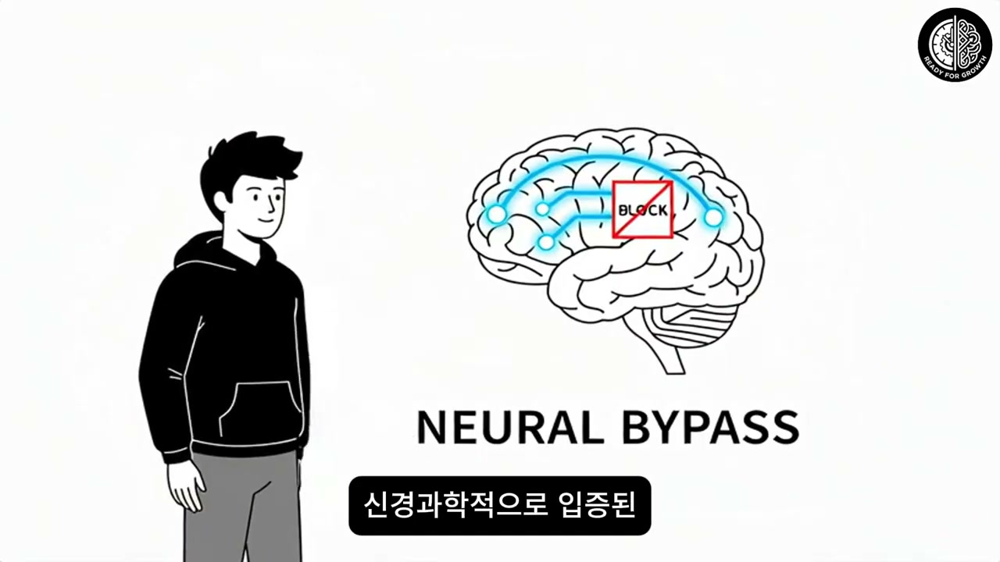
“열심히 하라”는 조언이 아니라, 미루는 습관을 근본적으로 우회하는 신경과학적으로 입증된 정신적 재조정 기법이라고 주장합니다. “반 180초”라는 표현으로 즉시성·실행성을 강조하며, 생각 에너지 낭비를 멈추고 행동 모드로 전환하라고 촉구합니다.
화면에는 NEURAL BYPASS, BLOCK 같은 텍스트와 뇌 회로 우회 그래픽이 등장해, ‘방해 회로를 우회한다’는 개념을 직관적으로 시각화합니다.
세그먼트 3 (0:50-1:20)
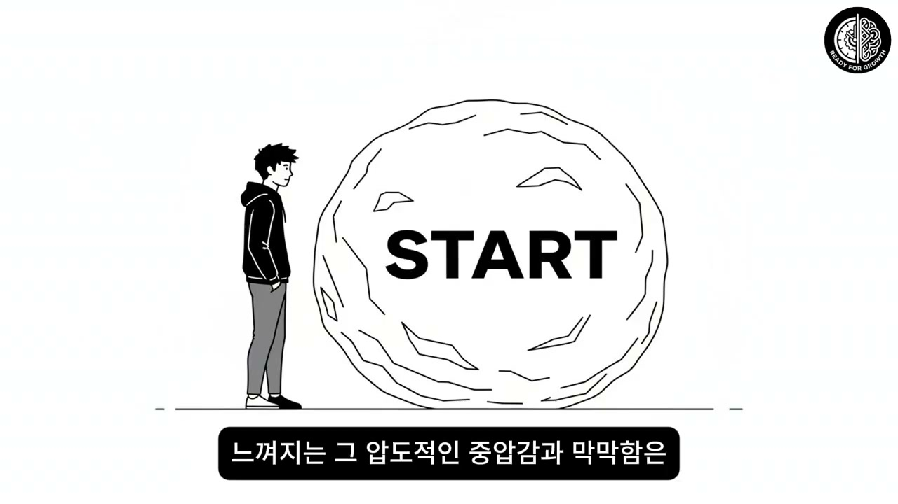
아이디어는 많지만 시작 못 하는 상태를 아이디어 마비로 명명합니다. 화자는 압도감/막막함의 원인을 의지 부족이 아니라 뇌의 위협 인식으로 설명해, 청자의 죄책감을 줄이면서 문제를 생물학적 메커니즘으로 재구성합니다.
시각 요소로는 거대한 START 바위(과업의 과대지각) 같은 이미지가 쓰이며, “너무 커서 못 움직이는 상태”를 상징합니다.
세그먼트 4 (1:20-1:50)
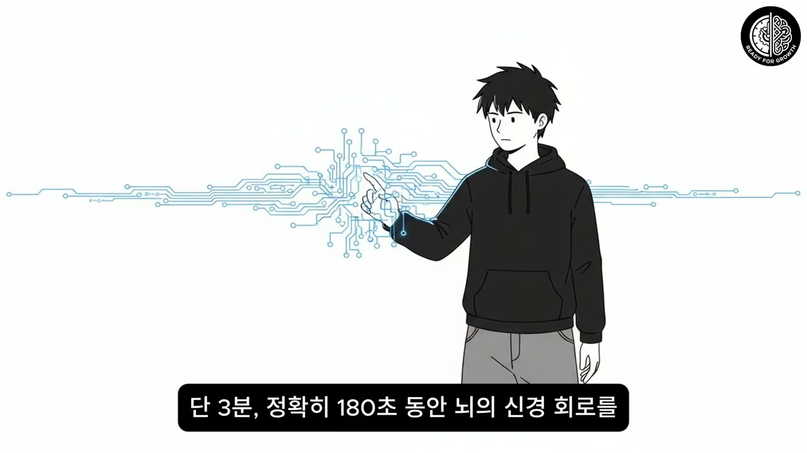
편도체(위협 감지)가 활성화되면 공포 반응이 행동을 억제한다는 설명이 제시됩니다. 해결책은 더 노력하는 것이 아니라, 정확히 180초 동안 신경회로를 재구성하는 것이며, 이 영상에서 개념을 행동으로 바꾸는 정밀 프로세스를 공개한다고 선언합니다.
화면은 회로/뉴런/디지털 라인 형태로 “뇌 운영체제 패치”의 톤을 강화합니다.
세그먼트 5 (1:50-2:17)
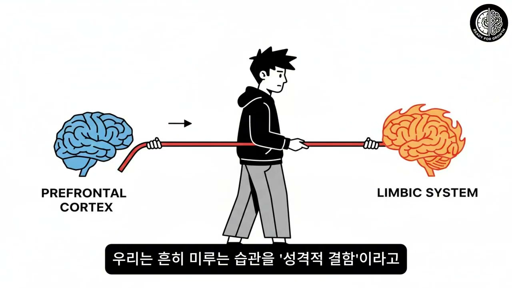
미루는 습관은 성격 결함이 아니라 전두엽 vs 변연계 통제권 싸움이라고 설명합니다. 전두엽이 세운 계획을 변연계가 가로막는다는 구조로, 자기비난 대신 시스템 이해를 유도합니다.
시각적으로 PREFRONTAL CORTEX와 LIMBIC SYSTEM이 줄다리기하는 구성은 핵심 논지를 가장 직접적으로 전달합니다.
세그먼트 6 (2:17-2:42)
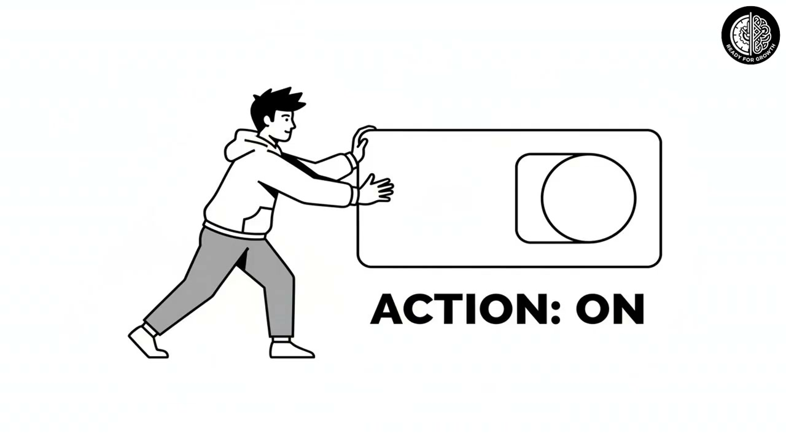
비밀 병기는 두 영역의 주도권을 순식간에 뒤집고, 행동을 기본값으로 설정하는 것이라고 말합니다. “180초의 기적을 지금 시작”이라는 문구로 실행 임계점을 낮춥니다.
ACTION: ON 토글/스위치 시각은 “설정 전환” 은유를 명확히 만듭니다.
세그먼트 7 (2:42-3:07)
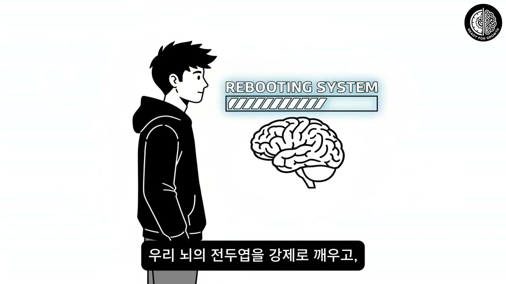
이제 본격적으로 180초 정밀 프로세스에 들어간다고 선언하며, 단순 결심이 아니라 시스템 재부팅이라고 규정합니다. 전두엽을 깨우고 변연계 저항을 무력화하는 3단계 절차라는 전체 구조가 처음 완성됩니다.
REBOOTING SYSTEM 진행바 시각은 사용자가 지금부터 “프로토콜 수행” 단계에 진입했음을 체감하게 합니다.
세그먼트 8 (3:07-3:34)
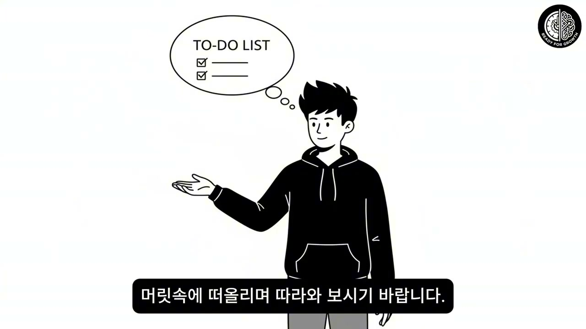
각 단계의 작동 이유를 신경과학 원리와 함께 설명하겠다고 하고, 시청자에게 지금 미루는 일을 떠올리라고 지시합니다. 1단계는 30초짜리 마이크로 축소이며, 뇌가 위협을 느끼는 이유를 “목표의 과대 크기”로 진단합니다.
화면의 TO-DO 리스트 생각풍선은 ‘머릿속 과업 부하’를 상징합니다.
세그먼트 9 (3:34-4:09)
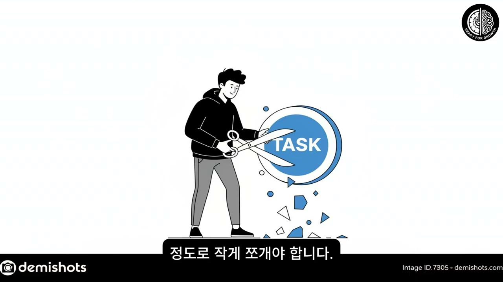
“책을 쓰겠다” 같은 거대 목표는 뇌에 사자에게 쫓기는 수준의 스트레스를 준다고 비유합니다. 그래서 목표를 우스울 정도로 작게 분해해야 하며, 예시로 “책 쓰기” 대신 “컴퓨터 앞에 앉아 한 문장 쓰기”, 또는 “운동” 대신 “운동화 끈 묶기”를 제시합니다.
TASK를 가위로 쪼개는 그래픽이 핵심이며, 이 장면에는 demishots, Intage ID.7305 워터마크가 보여 스톡 소스 사용도 확인됩니다.
세그먼트 10 (4:09-4:33)
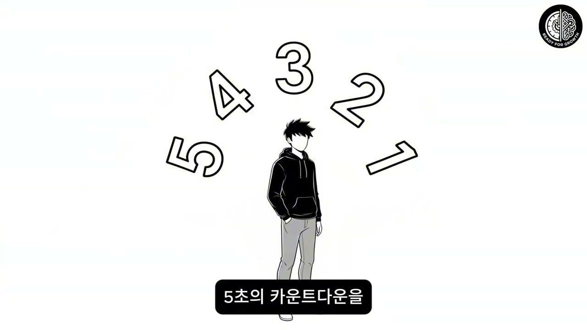
30초 재정의가 첫 열쇠라면, 두 번째는 5초 카운트다운입니다. 발표자는 이를 단순 숫자 세기가 아니라 감정 우세 상태를 논리/실행 상태로 강제 이동시키는 신경학적 전환으로 설명합니다.
화면에는 5·4·3·2·1 숫자가 인물을 둘러싸며 전환의 긴급성을 만듭니다.
세그먼트 11 (4:33-4:57)
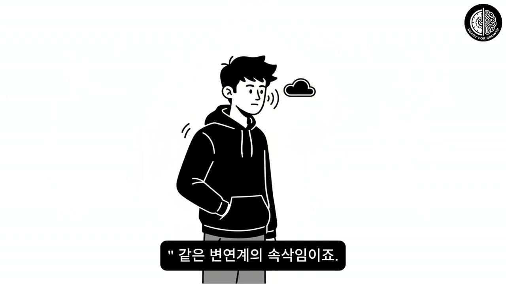
시작 직전에는 “피곤하니 내일 하자” 같은 변연계 속삭임이 나온다고 묘사합니다. 이때 숫자를 소리 내어 5,4,3,2,1로 세면 전두엽 실행 기능이 자극된다고 주장합니다.
귀 옆의 구름/속삭임 아이콘은 변연계의 유혹·합리화를 시각적으로 표현합니다.
세그먼트 12 (4:57-5:26)
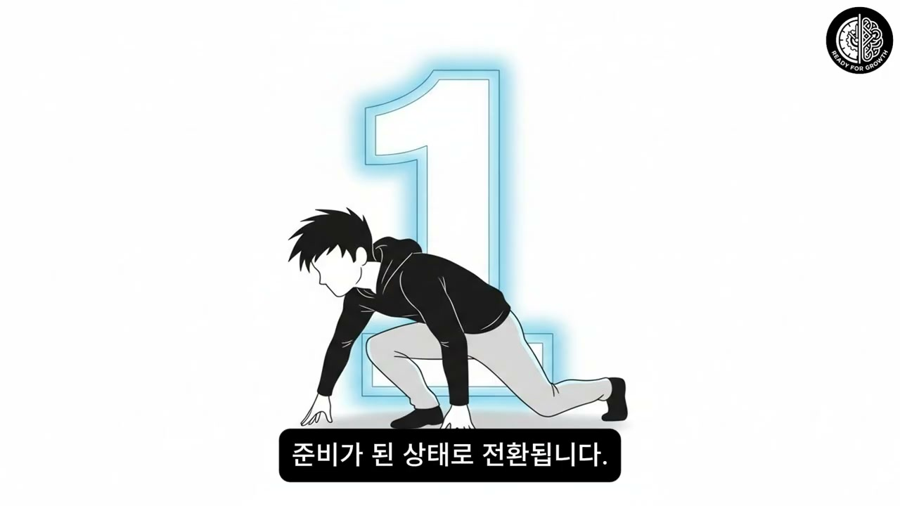
거꾸로 숫자 세기는 주의력을 현재에 고정하고, 미루기 습관 회로를 물리적으로 끊는다고 설명합니다. “1”에 도달하는 순간 뇌는 행동 준비 상태로 바뀌며, 이어지는 약 145초 동안 앞에서 정의한 미세 행동을 그냥 수행하라고 지시합니다.
큰 숫자 1과 출발 자세 그래픽은 “결심 완료, 즉시 실행” 신호로 기능합니다.
세그먼트 13 (5:26-5:54)
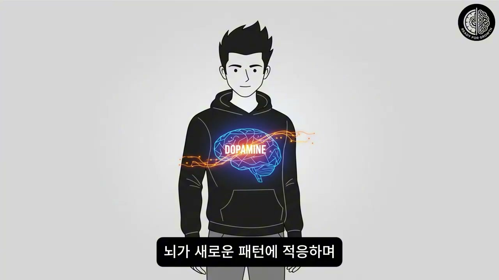
왜 하필 2분이냐는 질문에, 새 행동 시작 시 인지 마찰이 초반 2분에 가장 강하다고 설명합니다. 이때 뇌가 새 패턴에 적응하며 도파민과 노르아드레날린 분비를 시작하는 예열 시간이 약 2분이라는 논리를 제시합니다.
가슴 부위 DOPAMINE 네온 뇌 그래픽은 분비/각성 전환을 강조합니다.
세그먼트 14 (5:54-6:20)
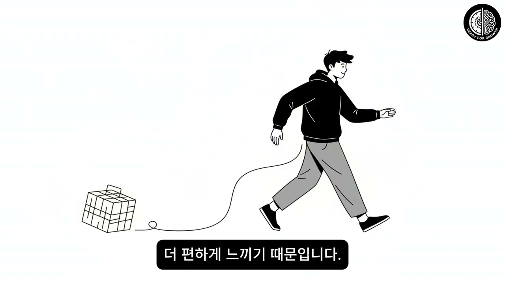
2분을 넘기면 관성이 지배하고, 시작보다 유지가 더 편해진다고 설명합니다. 따라서 3분은 의지력 시험이 아니라 뇌 운영체제에 침투해 행동 방해 버그를 고치는 패치라고 비유합니다.
움직이는 인물 뒤로 끌리는 물체(저항)와 전진 모션이 관성 전환의 핵심 메시지를 시각화합니다.
세그먼트 15 (6:20-6:49)
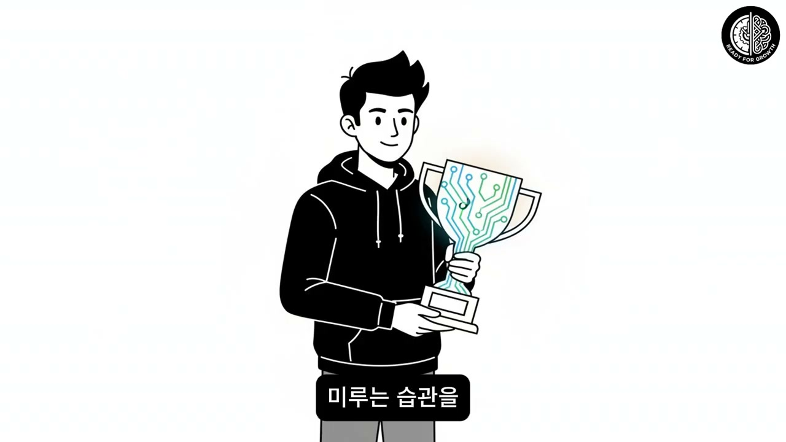
거창한 준비 없이 목표 쪼개기 + 숫자 세기 + 2분 머무르기만으로도 뇌는 성과 방향으로 가속한다고 말합니다. 여기서 3분 해킹의 핵심을 다시 못박고, 다음으로 “이 동력을 지속 성과로 잇는 방법”으로 전환합니다.
트로피/성취 상징 이미지는 “작은 실행이 결과로 연결된다”는 보상 프레임을 강화합니다.
세그먼트 16 (6:49-7:16)
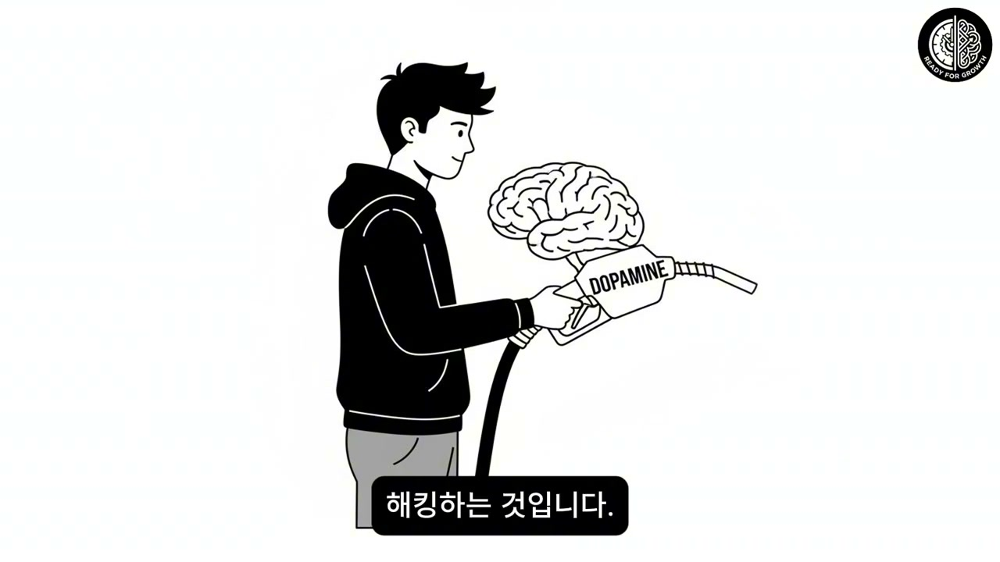
뇌를 자동 실행 체질로 바꾸는 핵심은 도파민 시스템 해킹이라고 규정합니다. 도파민을 쾌락 호르몬으로만 보지 말고, 보상 기대와 동기부여의 신호로 이해해야 한다고 강조합니다.
연료 주입기(DOPAMINE)가 뇌에 공급되는 이미지는 “동기 연료 주입” 은유를 선명하게 전달합니다.
세그먼트 17 (7:16-7:44)
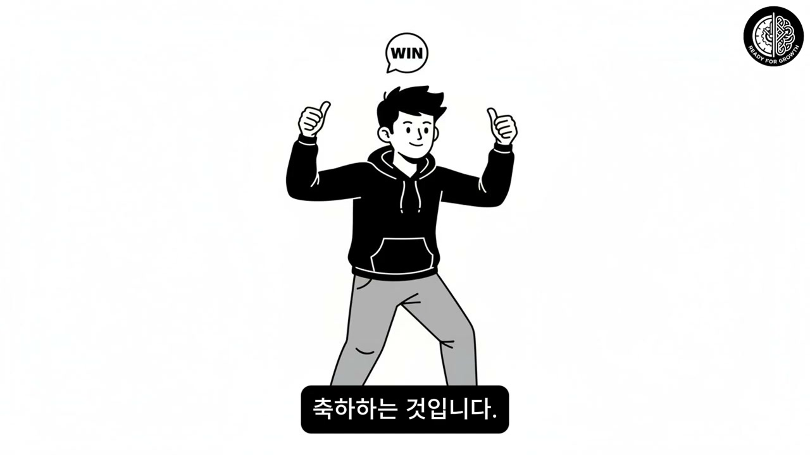
아주 작은 첫 발 이후의 미세 성취감을 의도적으로 축하하라고 안내합니다. 자기 칭찬 한마디, 체크리스트 표시만으로도 보상회로가 활성화된다는 식으로, 보상의 문턱을 낮춘 것이 특징입니다.
WIN 말풍선과 엄지 제스처는 ‘마이크로 승리의 즉시 강화’를 시각화합니다.
세그먼트 18 (7:44-8:13)
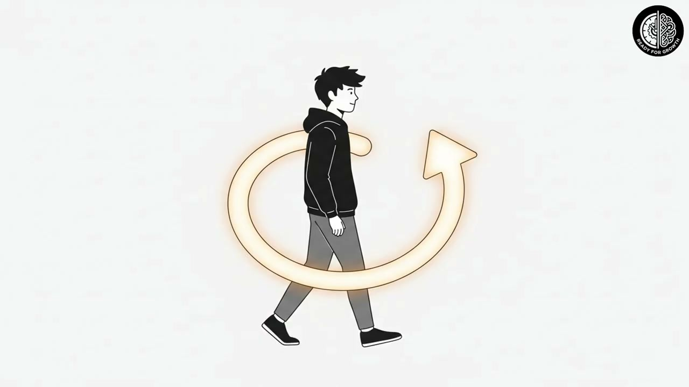
작은 도파민 분출이 “이 행동은 즐겁다, 다시 하자” 신호를 만들고, 반복되면 시작 행위 자체가 보상이 된다고 설명합니다. 궁극적으로 의지력 없이 몸이 먼저 움직이는 선순환 구조를 만들 수 있으며, 다음 단계로 정체성 재구성을 제시합니다.
원형 화살표 루프 시각은 반복-강화-자동화의 습관 고리를 상징합니다.
세그먼트 19 (8:13-8:41)
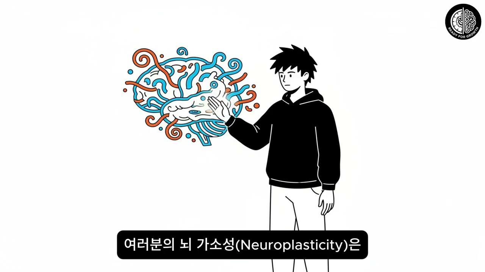
아이디어 마비를 겪는 사람은 스스로를 “생각은 많은데 실천이 약한 사람”으로 규정한다고 지적합니다. 하지만 3분 해킹을 매일 반복하면 뇌 가소성(Neuroplasticity) 기반으로 “나는 일단 움직이는 사람”이라는 신경 경로가 강화된다고 주장합니다.
또한 행동과 자아정체성이 불일치할 때 뇌가 강한 불편함을 느낀다는 심리 메커니즘을 연결합니다.
세그먼트 20 (8:41-9:04)
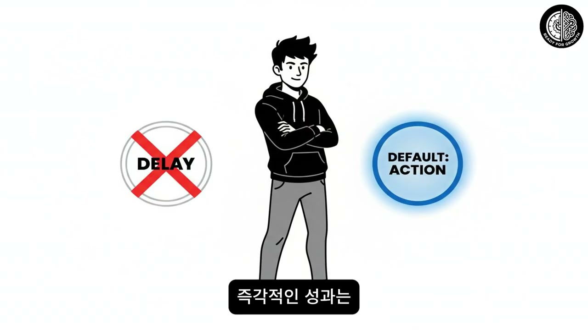
반복적 즉각 실행은 결국 새 정체성을 뇌가 받아들이게 만들고, 미루기는 “나답지 않은 행동”으로 밀려난다고 말합니다. 즉각 성과가 기본값이 된 뒤에는 한 단계 더 나아가 실행 의도(implementation intention) 결합 전략으로 확장합니다.
DELAY를 X로 지우고 DEFAULT: ACTION을 강조한 그래픽은 메시지의 핵을 한 장면에 압축합니다.
세그먼트 21 (9:04-9:32)
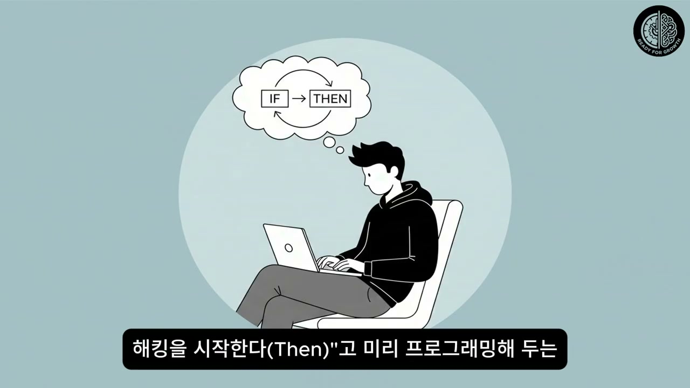
전략은 “만약 ~하면, 그때 ~한다” 공식으로 요약됩니다. 예시로 “노트북 앞에서 멍해져 딴짓하고 싶어지면, 즉시 3분 신경 해킹 시작”을 미리 프로그래밍하라고 제시합니다.
이 방식은 의식적 결정을 매번 새로 내리지 않게 하여 에너지 절약과 즉시 실행 전환을 동시에 달성한다는 논리입니다.
세그먼트 22 (9:32-9:59)
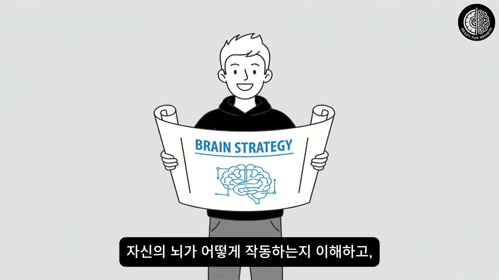
뇌를 “자동 실행 매크로가 설치되는 시스템”으로 비유합니다. 성과 전환의 비결은 강한 정신력이 아니라, 뇌 작동 메커니즘 이해 + 전략적 이용이라고 못박습니다.
사람들이 흔히 완벽한 타이밍이나 강한 동기부여를 기다린다는 습관을 비판하며, 대기 대신 구조화된 실행을 권합니다.
세그먼트 23 (9:59-10:31)
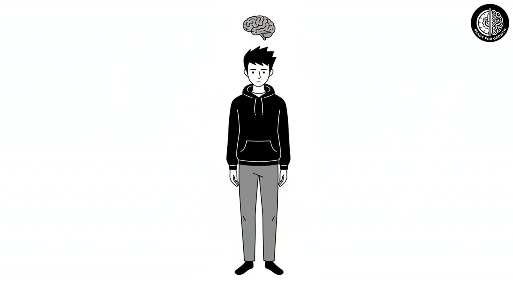
신경과학의 메시지는 “동기는 시작 전에 오는 게 아니라 시작 후 보상으로 분비된다”는 것입니다. 따라서 움직이지 않으면 뇌도 도와주지 않으며, 영상 종료 시점에 두 선택지를 제시합니다: 기존처럼 언젠가를 기다리며 생각만 하는 사람으로 남을지, 지금 전환할지.
화면은 단일 인물/뇌 아이콘의 절제된 구성으로 결단 직전의 정지 상태를 표현합니다.
세그먼트 24 (10:31-10:57)
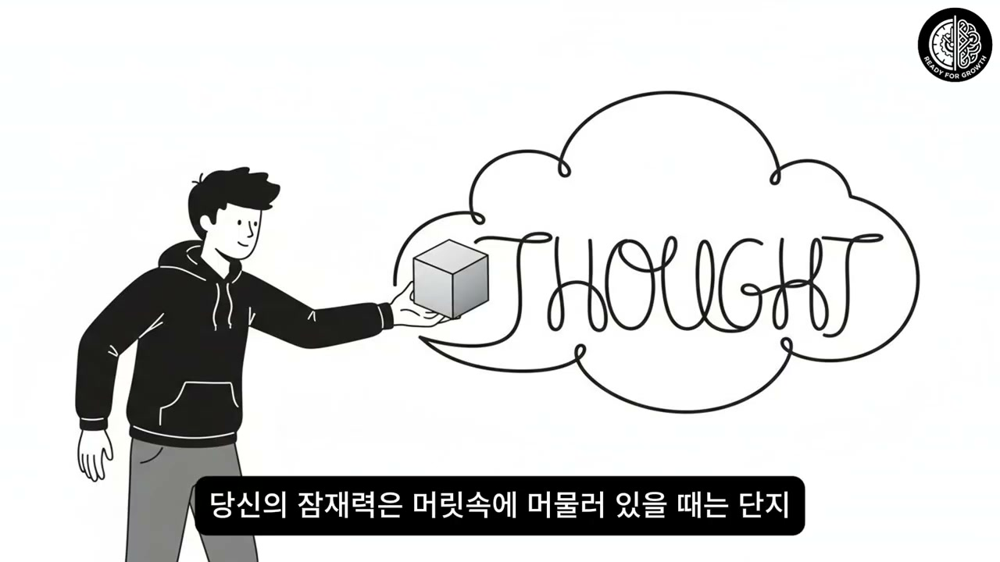
둘째 선택지는 지금 바로 180초 타이머를 맞추고 회피하던 고민 앞에 앉는 것입니다. 잠재력은 머릿속에 있을 때는 상상일 뿐이고, 3분 해킹을 통과할 때 현실이 된다는 문장으로 행동 착수를 강하게 압박합니다.
THOUGHT 구름과 손에 든 큐브 이미지는 생각(추상)을 행동 가능한 객체(구체)로 전환하는 은유로 읽힙니다.
세그먼트 25 (10:57-11:21)
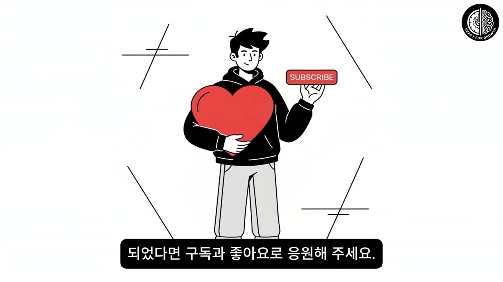
마지막 메시지는 “남은 건 실행뿐”입니다. 3분 뒤 달라진 몰입감을 약속하고, 영상이 도움이 됐다면 구독/좋아요, 추가 마비 증상은 댓글로 남기라고 요청하며 후속 해결을 예고합니다.
하트와 SUBSCRIBE 버튼 시각은 CTA를 직접적으로 구현합니다.
“의지력에 전혀 의존하지 않고도… 3분 신경 해킹법이 있다고 하면 어떠시겠어요?”
“이건 단순히 열심히 하라는 조언이 아니라… 신경과학적으로 입증된 정신적 재조정 기법입니다.”
“아이디어 마비… 의지가 부족해서가 아닙니다.”
“단 3분, 정확히 180초 동안 뇌의 신경 회로를 재구성.”
“미루는 습관은 성격적 결함이 아니라 전두엽과 변연계 사이의 통제권 싸움.”
“이 3분 기법은 세 가지 단계로 나뉩니다.”
“목표를 우스울 정도로 작게 쪼개야 합니다.”
“5초의 카운트다운은… 감정에서 논리로 강제 이동시키는 작업.”
“초기 2분만 버티면 뇌는 이 일이 안전하고 해만하지 않다고 판단하기 시작합니다.”
“도파민의 진짜 역할은 쾌락이 아니라 보상에 대한 기대와 동기부여.”
“동기부여는 시작 전에 생기는 것이 아니라 시작한 후에 분비되는 보상.”
“잠재력은 머릿속에 머물러 있을 때는 상상일 뿐… 3분의 신경해킹을 통과하는 순간 현실이 됩니다.”
이 영상은 미루기를 도덕성/의지의 문제가 아니라 신경 회로 설계 문제로 다루며, 매우 실전형 프로토콜(30초 축소 → 5초 카운트다운 → 145초 실행)을 제시합니다. 특히 “동기보다 시작”, “작은 승리의 즉시 보상”, “If-Then 트리거 사전 설정”, “정체성 재구성”을 하나의 루프로 묶어 단기 착수와 장기 자동화를 동시에 노리는 점이 핵심입니다.
실용적으로는 다음이 바로 적용 포인트입니다:
종합하면 영상의 메시지는 단순합니다. 잠재력은 실행 이전엔 환상이고, 180초 실행 이후에만 결과의 방향성을 가진 현실이 된다는 것입니다.
댓글
GitHub 이슈 기반 댓글 시스템입니다.